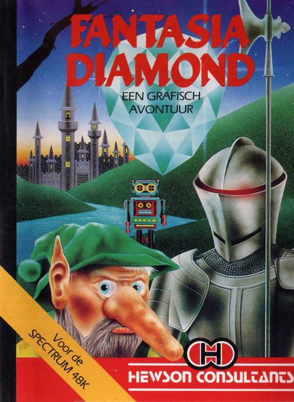
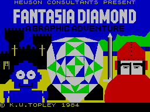
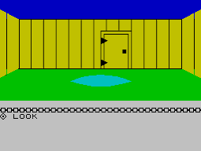
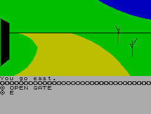

Fantasia Diamond


{kind=link}

| Publisher: | Hewson Consultants |
| Price: | £7.95 |
| Year: | 1984 |
| Source: | CRASH, Issue 5 |

Fantasia Diamond, a family heirloom and the largest diamond known to man, has been stolen and removed to a fortress across the river. Boris the master spy, who made his way to the fortress to recapture the diamond, has been imprisoned by the faithful guardian who patrols the rooms and corridors for intruders. On your journey you are likely to meet elves, pixies, gnomes and the decidedly unfriendly woodcutter.
Your mission is to enter the fortress, recover the diamond and rescue Boris. But once you find the diamond the game is not over — you must still get back home, and this can be the most difficult part.

On loading you notice a very attractive loading screen, followed by some pleasing graphical representations of the first few frames of the adventure.
The screen that confronts you is very reminiscent of that used in The Hobbit. The screen is divided into two areas. The upper area shows the action taking place and the pictures of some of the scenes from the adventure. The lower area is used for your input and error messages.
This screen presentation is adequate but it can be difficult to keep your place on the upper scrolling portion as it receives fresh information. Using different colours for the objects, characters, etc. would help but it may have been better to clear the screen as you enter new locations.

When you start the adventure you are weak but you can build up your strength by eating and drinking. You should feed regularly otherwise you may become critically weak. Your strength determines how many objects you can carry and if you become too weak you won’t be able to pick up the lightest of objects — including food.
The characters that inhabit the adventure lead independent lives with friends more or less sticking by you. During play you become aware of the real time element to the game. Every character takes action every 15 seconds whether or not you yourself do anything. However, if you feel like a breather all action stops when you start to type and doesn’t proceed until you ENTER.
To make movement in the four main directions easier use has been made of the cursor keys, which is very useful for a quick early foray when the early part of the adventure can be mapped out; NE, SW, etc. can also be entered in the usual way.

The vocabulary used in the adventure is a very strong point — it is both large and user-friendly. Intelligent responses are the order of the day — not just the ubiquitous — ‘You Can’t’. Leaving behind the Verb/Noun restrictions of many adventures, the game allows much more complex inter-actions and requires the adventurer to be specific, eg UNLOCK DOOR WITH KEY. Quite complex sentences can be used with each command starting with a verb, eg OPEN THE DOOR AND GO EAST. The vocabulary is varied enough to allow three keys which must be matched to three doors. Similarly with the three books. Another useful feature is that the computer can remember the last verb you used so you can GET KEY (ENTER) — WINE (ENTER), which saves time.
The game uses a powerful LOOK command, eg LOOK AT THE CHEST is distinguishable from LOOK INTO THE CHEST and you can even look across into different scenes with LOOK THROUGH THE WOODEN DOOR or LOOK INTO THE SMALL CAVE. This gives you a chance of avoiding unfriendly characters and so marks an excellent and very useful advance which other aspiring authors would do well to note.
Further examples of the breadth of dialect are seen with FOLLOW ROBOT and SAY TO ELF GET KEY. If you needed to be persistent with this last request CAPS SHIFT and 9 will repeat the commands on the last line you entered — a nice touch and a sign of a highly polished piece of software.
The abbreviations are very helpful — often the first or first two letters are adequate.
Fantasia Diamond is a long adventure with many interesting and logical problems to solve. Highly recommended.
| Difficulty: | 7 |
| Atmosphere: | 9 |
| Vocabulary: | 9 |
| Logic: | 8 |
| Debugging: | 10 |
| Overall value: | 10 |